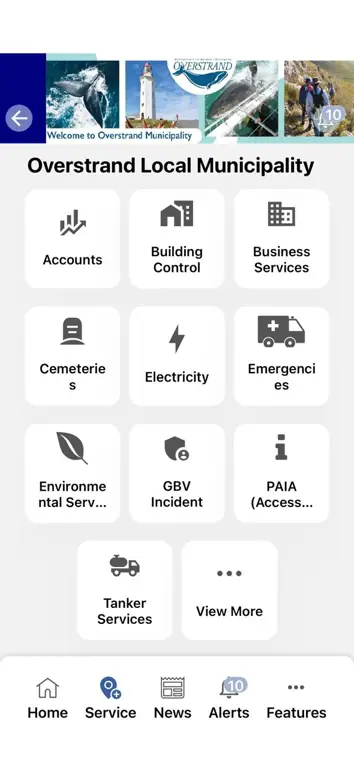
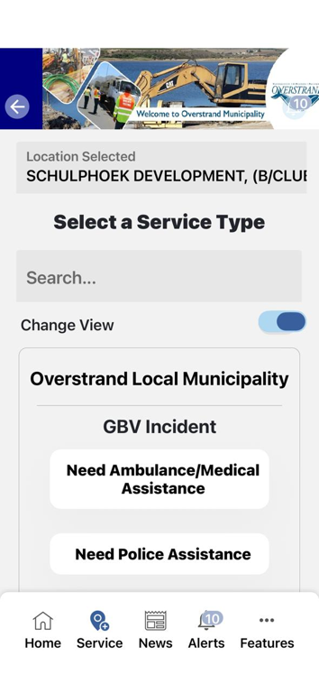
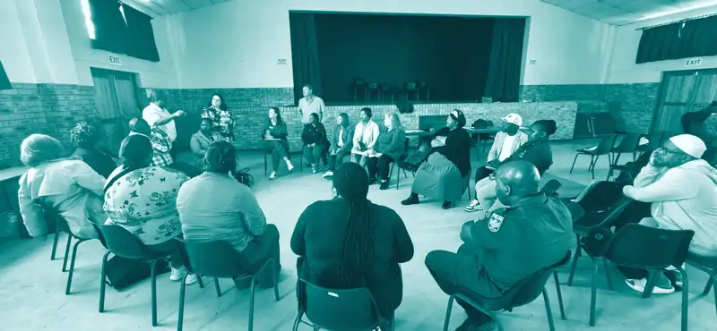
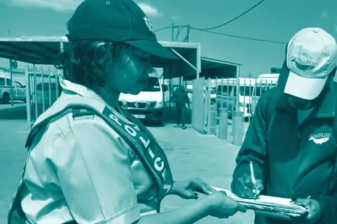
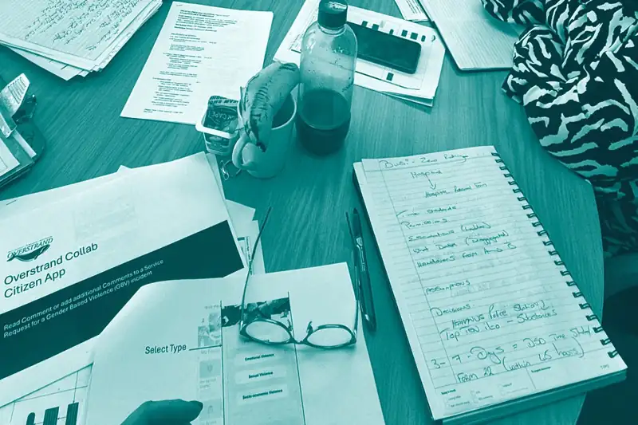
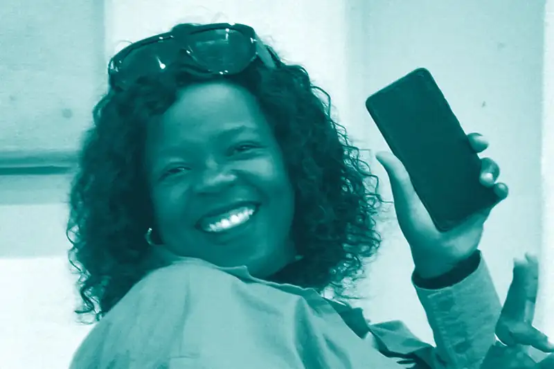
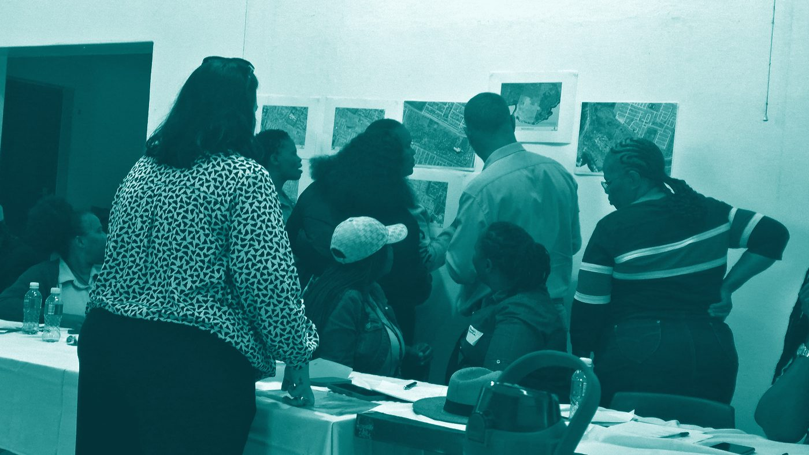
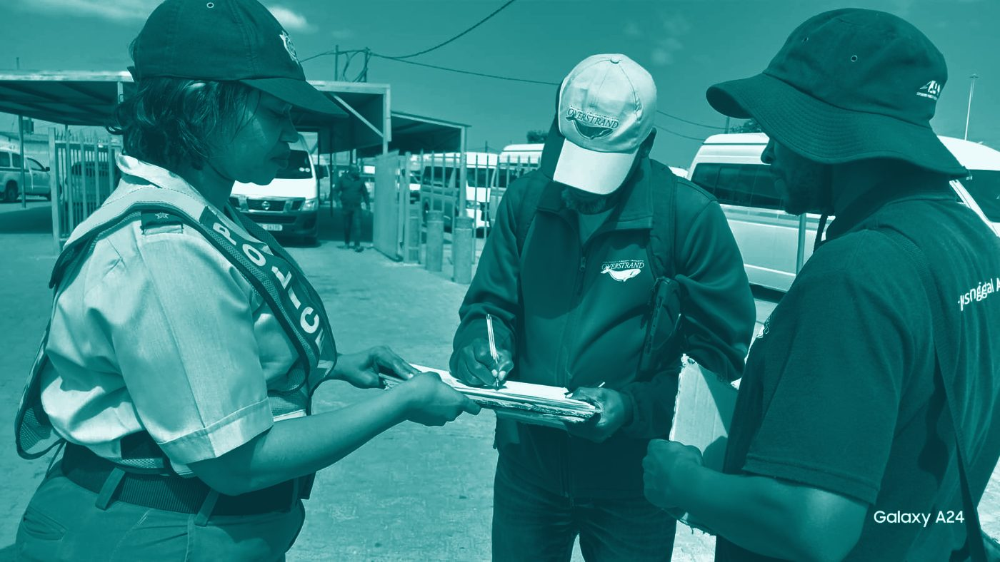
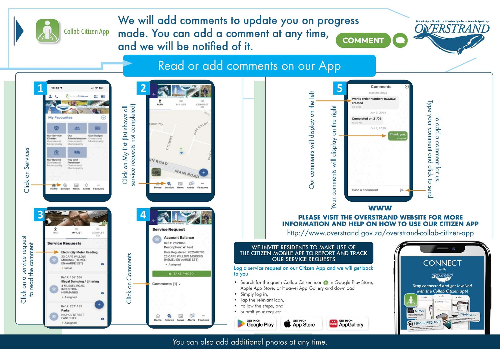

Flagship Programme
Track Her Case.
Every case, followed through the system to justice. A survivor's journey through the justice system should never disappear in the handover between the services meant to protect her.
Gender-based violence systems rarely fail at the policy. They fail where one service hands her over to the next.
Across South Africa and the wider region, the mandates, laws and services to respond to gender-based violence (GBV) largely exist. What breaks is the coordination between them. A report opened with law enforcement stalls before it reaches the prosecutor. A survivor referred for health care is lost before social development ever hears of her. Information degrades as it passes between institutions, so that by the time a case reaches court it is often incomplete or illegible, and is struck from the court roll for want of clarity rather than merit. Each part of the system does its job, and the woman still falls through the spaces in between.
Track Her Case is STAND's response: a privacy-conscious way to follow a case across every institution that touches it, from first report through health, social services, policing and the courts, so that no handover becomes a dead end and the information holds together at each step. It makes the breakdowns visible and strengthens accountability across the whole system, while protecting the survivor's privacy and working within each department's existing mandate.

The Red Dot Process: live and working in the Overstrand
The Red Dot Process is the working pilot of Track Her Case, operating now in the Overstrand.
Designed by STAND in collaboration with Overstrand Municipality and the Overberg Violence Prevention Unit, with the support of the DG Murray Trust, the Red Dot Process is a seven-stage, privacy-conscious GBV track-and-trace workflow built onto Overstrand Municipality's existing Citizen App. The GBV reporting function went live on 24 August 2026. The first incident was dispatched to law enforcement (the South African Police Service) on 27 August 2026.


- A report is logged through the municipality's existing Citizen App, with no new system for anyone to learn
- The case is assigned a non-identifying reference number, so it can be tracked without sharing client records or names
- Statutory partners were convened through the Western Cape Violence Prevention Unit to map legal mandates, response timelines, and handovers
- Handovers are defined across law enforcement and its specialised Family Violence, Child Protection and Sexual Offences (FCS) units, the Department of Justice, the National Prosecuting Authority, the Department of Health, Hermanus Hospital, the Department of Social Development, child protection non-profit organisations and municipal structures
- The Violence Prevention Unit signed off the workflow; Health confirmed its stage in the pathway
- A trained community layer, embedded in the Department of Social Development's existing GBV Ambassador Programme, supports survivors and peer-led safety systems
- The case is traced to resolution, producing a replicable, district-level record of where justice moves and where it stalls
Built on what already exists
The design discipline is deliberate. The Red Dot Process adds no parallel database, requires no institution to change its mandate, and shares no identifying client records. It works through the systems that partners already use, and the roles they already hold. That is why it went from design to a live dispatch to law enforcement inside a single programme cycle.
The community layer is equally grounded. STAND equipped and further trained 31 screened GBV ambassadors within the Department of Social Development's existing GBV Ambassador Programme, supported testing and peer-led safety systems, and documented a replicable district model.
Supported by the DG Murray Trust











Live now, ready to scale
A working district model, designed to travel across the Global South.
The Red Dot Process is live in the Overstrand and dispatched its first case three days after launch. Phase 1 is built and running, and the back end is ready for the next step. Phase 2 takes it across the whole district, and that is where funding partners come in. With the right support, it scales.
What we are seeking
Track Her Case is the vision the Red Dot Process proves: a model that any district can adopt to make GBV response visible, coordinated, and accountable, without new systems or new mandates. The pilot is working. The method is documented. The next step is scale.
We are seeking grantmakers, funders, corporate social investment partners and individual supporters to carry this across the Global South, beginning with Phase 2 of the Overstrand rollout and extending into new districts.
The next step is scale.
You don't have to be an institution to move this. Your gift pays for the people and systems that keep a live case tracking system running, and helps it reach more women.